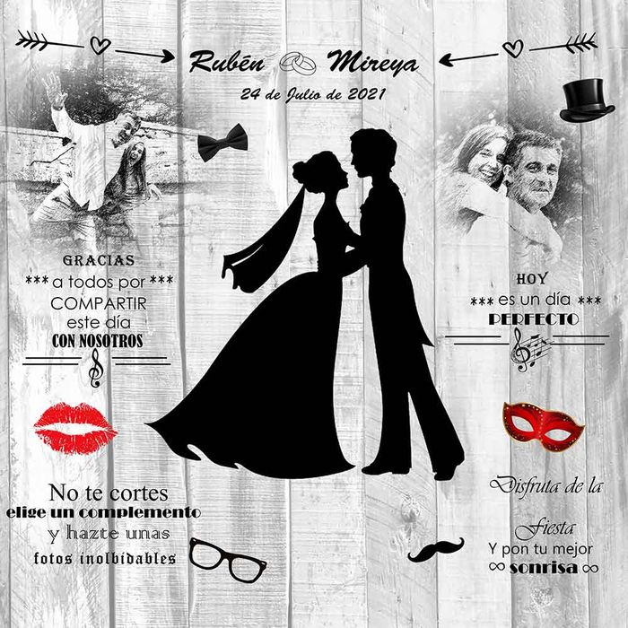
Photocall con impresión al momento
Fondo personalizado, atrezo, gafas y sombreros. Se imprimen las fotos en el momento, y no solo las nuestras: también las que hagan los invitados con el móvil.
Propuesta de diseño preparada por G&G Elcano para Foto Soria Digital. Fotos y datos reales de Álvaro Rodríguez.
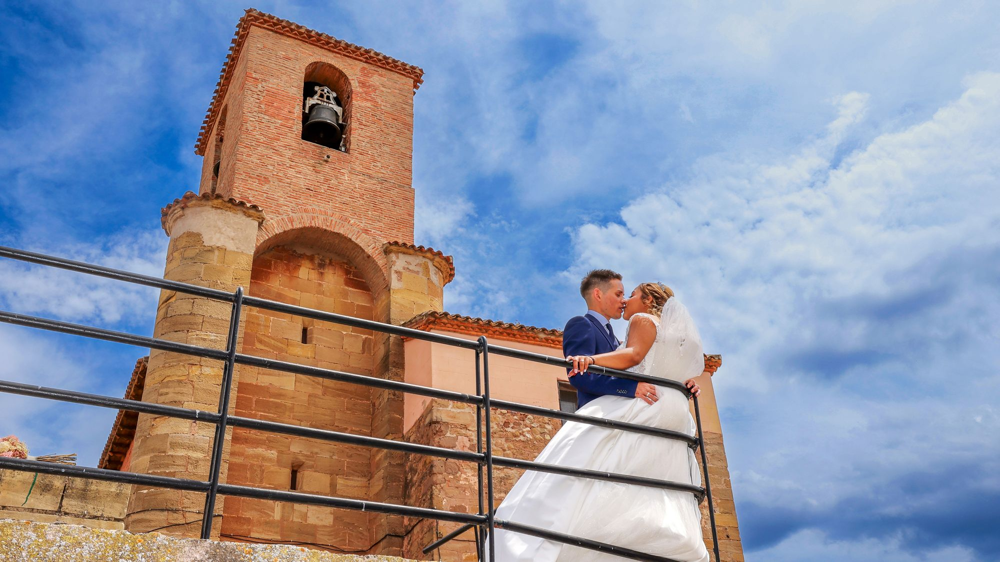
Bodas en Soria, El Burgo de Osma y provincia
Y el álbum maquetado al día siguiente, para que lo veáis y me digáis qué cambiamos. Soy Álvaro Rodríguez y llevo fotografiando bodas en Soria desde 1996.
Preguntar por nuestra fecha Ver un día entero
Contesto el mismo día, de 8:00 a 23:00.
En muchas bodas la respuesta es «en unos meses». Para entonces ya has contado la boda cien veces y las únicas fotos que circulan son las que hizo tu primo con el móvil.
Aquí va al revés. El mismo día tenéis un vídeo corto para pasar por el grupo mientras seguís de fiesta, y a las 12 horas un enlace con las fotos para que las vea todo el mundo.
Los plazos de la boda ultrarrápida
Un montaje con lo mejor del día, listo para pasarlo por el grupo mientras aún estáis bailando.
Un enlace privado. Lo compartís con quien queráis y cada uno se descarga las suyas.
Os lo enseño montado. Los cambios los hacemos en directo por WhatsApp o en vuestra casa, viendo las láminas una a una.
El montaje bueno, ya editado y terminado.
Álbum aprobado y camino del laboratorio.
Lo que entra sin pedirlo

Bodas reales en Soria y provincia
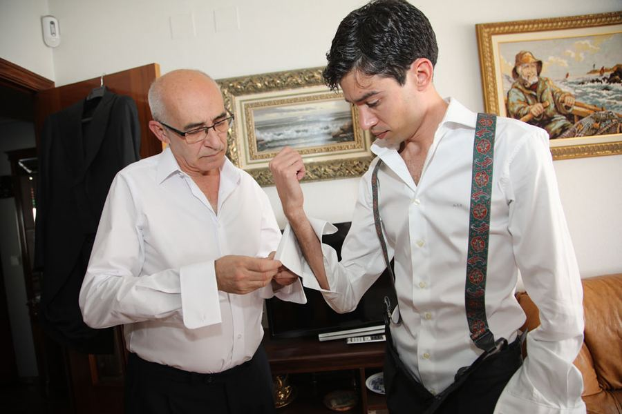
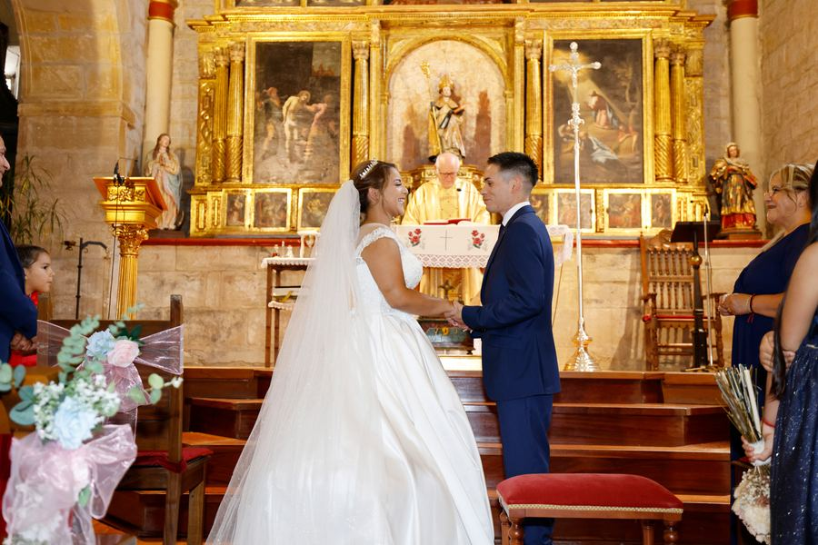
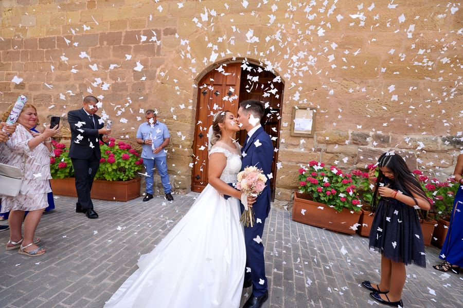
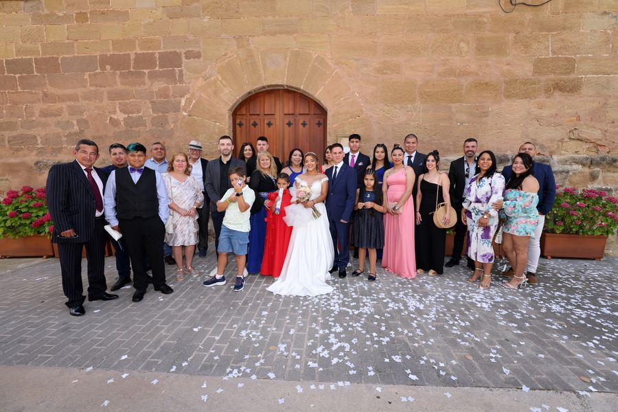
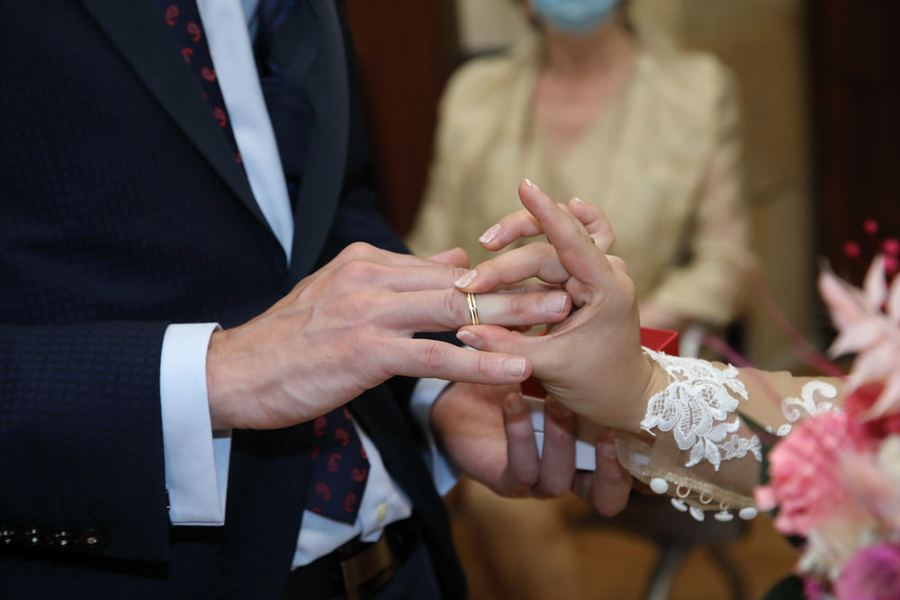
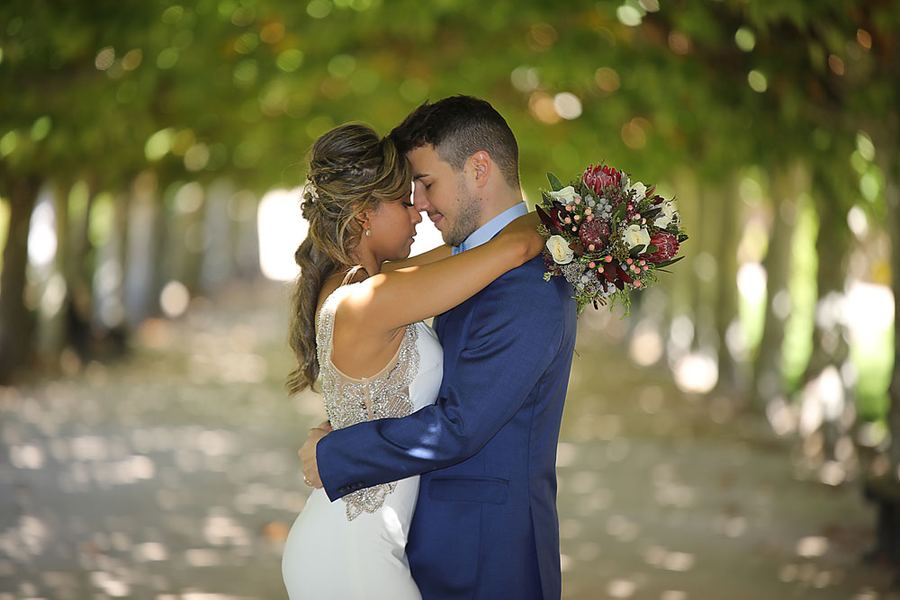
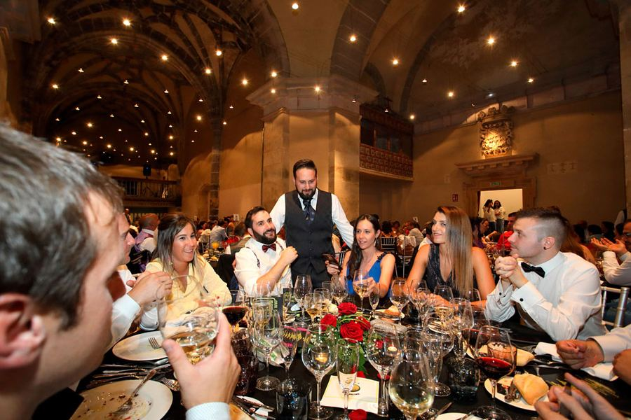
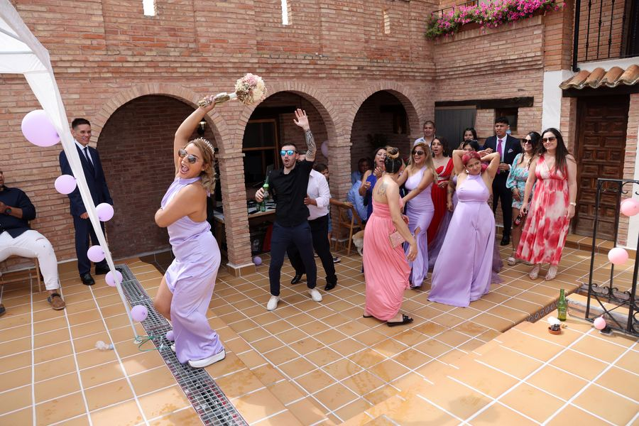
Se añade al reportaje

Fondo personalizado, atrezo, gafas y sombreros. Se imprimen las fotos en el momento, y no solo las nuestras: también las que hagan los invitados con el móvil.
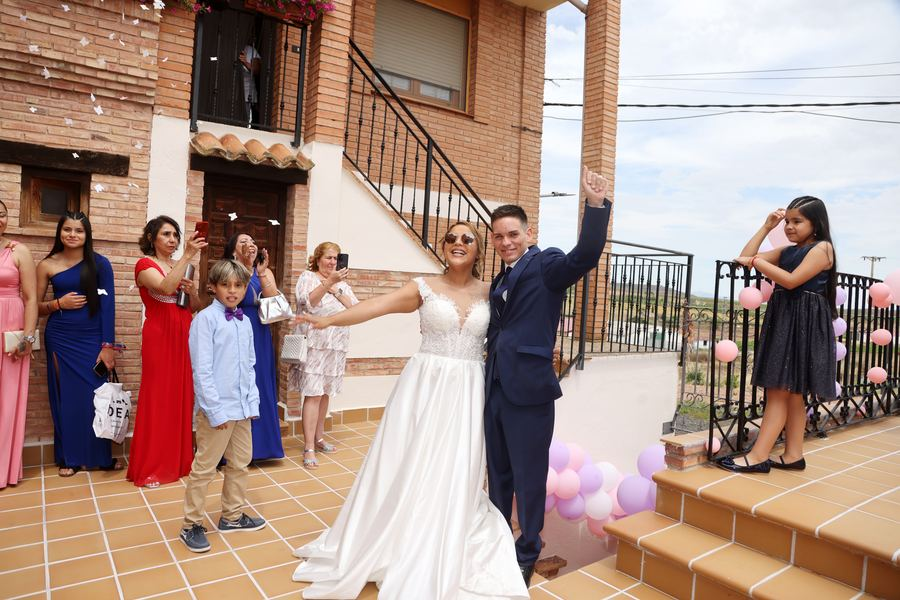
Dos montajes: el corto del mismo día y el largo a los tres. Y si os apetece algo distinto, fotografía y vídeo en 360 grados para meter a los invitados dentro de la escena.
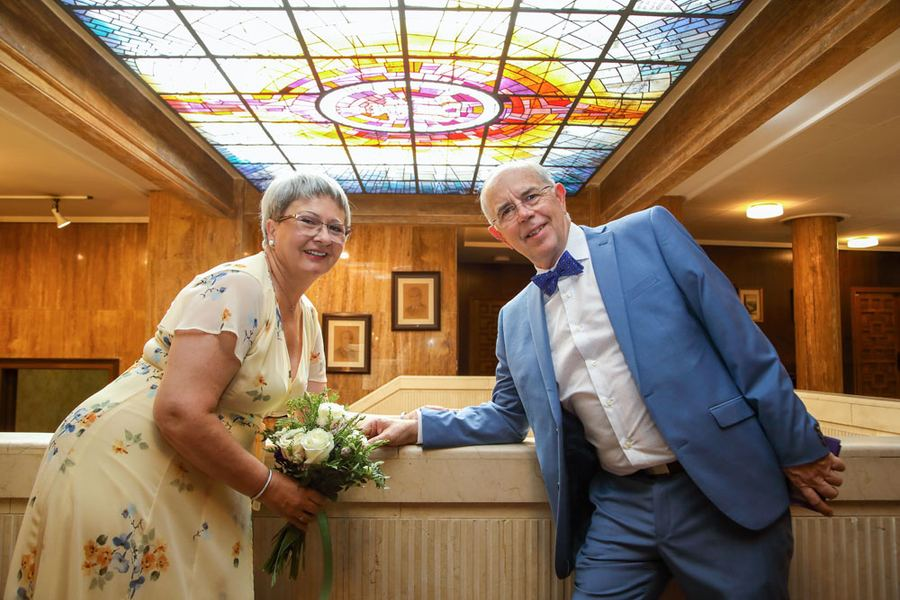
Cincuenta años juntos también se fotografían. Mismo trato y mismos plazos que en una boda.
4,9 sobre 5 con 27 opiniones
«Impresionantes reportajes, sobre todo en la boda de unos amigos, gran fotógrafo. Lo recomiendo.»
TV Soria
«Gran fotógrafo Álvaro. Profesional que te asesora en todo lo que necesites y se adapta a tus eventos.»
Fernando García
«La amabilidad extraordinaria y la profesionalidad inigualable. Las fotos con la mayor calidad impresa.»
Eva Muñoz Pascual
Opiniones publicadas en la ficha de Google de Foto Soria Digital.
La diferencia de contratar a un profesional
Firmado, con vuestros derechos puestos por escrito antes de nada.
Siempre. Sin factura no hay nada que reclamar el día que haga falta.
Entre 3 y 5 años, con dos copias en sitios distintos.
Vuestras caras no salen de aquí sin que vosotros digáis que sí.
Vuestros datos se tratan conforme a la ley, no acaban en ninguna lista.
Si algo sale mal, estoy aquí para arreglarlo. Vivo en El Burgo de Osma.

Quien va a estar en vuestra boda
Vivo en El Burgo de Osma y llevo desde 1996 con la cámara. Primer premio de fotografía de Semana Santa en El Burgo de Osma, tercer premio en San Esteban de Gormaz, premio de Arte Digital en Valladolid y accésit de FEPI, la asociación de profesionales de la imagen. Talleres de fotografía para la Diputación de Soria.
Depende de las horas que queráis que esté y de si añadís vídeo o photocall. Decidme la fecha y lo que tenéis en la cabeza y os paso un presupuesto cerrado, sin sorpresas después.
La fecha se bloquea con la reserva y el contrato firmado. Hasta ese momento va por orden de llegada, y los sábados de verano suelen irse pronto.
Depende del día y de las horas contratadas, pero de una boda completa se entregan varios cientos. Para papel se seleccionan unas 500, las mejores, sin que tengáis que elegir vosotros.
Soria capital, El Burgo de Osma y toda la provincia entran sin coste añadido. Fuera de la provincia se mira caso por caso, se puede.
Se cambia el plan y ya está. Llevo fotografiando bodas por aquí desde 1996 y ha llovido unas cuantas veces. Siempre hay un claustro, un porche o una buena excusa para una foto distinta.
Claro. Aquí tenéis una completa, desde los preparativos hasta el final de la fiesta.
Rellenad esto y se abre WhatsApp con el mensaje ya escrito. Solo tenéis que darle a enviar. Os contesto el mismo día.
O si lo preferís: 645 12 05 19 · fotosoriadigital@gmail.com